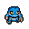
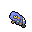

Pokédex / #453
Croagunk #453
PoisonFighting
It rarely fights fairly, but that is strictly to ensure survival. It is popular as a mascot.
Generation 4 · Sinnoh

Stats
| Attack | 61 | |
|---|---|---|
| Defense | 40 | |
| Sp. Atk | 61 | |
| Sp. Def | 40 |
In the wild
| Wild level | 20–30 |
|---|---|
| HP | 48 |
| Experience | 5 |
| Egg groups | Human-Like |
Evolution
- Evolves into Toxicroak at level 40.
Moves
| Level | Move | Type | Category | Power | Energy | Cooldown | Effect | |
|---|---|---|---|---|---|---|---|---|
| 1 | Poison Sting | Poison | Physical | 15 | 20 | 5s | Poison Sting inflicts damage and has a 30% chance of poisoning the target. | |
| 5 | Flatter | Dark | Status | – | 60 | 30s | Flattery is used to confuse the target. However, this also raises the target's Sp. Atk stat. | |
| 10 | Low Kick | Fighting | Physical | 80 | 80 | 12s | Low Kick deals damage and has no secondary effect. | |
| 15 | Mud-Slap | Ground | Special | 20 | 30 | 10s | Mud-Slap deals damage and lowers the target's Accuracy by one stage. | |
| 20 | Astonish | Ghost | Physical | 30 | 30 | 5s | The user attacks the target while shouting in a startling fashion. This may also make the target flinch. | |
| 25 | Venoshock | Poison | Special | 65 | 75 | 16s | Venoshock inflicts damage and its power will double to 130 when the target is poisoned. | |
| 30 | Sucker Punch | Dark | Physical | 80 | 80 | 12s | Sucker Punch deals damage and has no secondary effect. | |
| 35 | Poison Jab | Poison | Physical | 80 | 80 | 12s | Poison Jab inflicts damage and has a 30% chance of poisoning the target. |
Field abilities
Rock SmashHeadbuttStrengthDig
Special abilities
AnticipationDry Skin
Egg moves
Bullet PunchCounterCross ChopDrain PunchDynamic PunchFake OutFeintHeadbuttMeditateQuick GuardSmelling SaltsVacuum WaveWake-Up Slap
Technical machines
Brick BreakBulk UpDouble TeamEarthquakeFacadeFocus PunchHidden PowerPoison JabProtectRain DanceRestRock SlideRock TombSecret PowerShadow BallSludge BombSubstituteToxic
Drops
| Item | Amount | Chance | |
|---|---|---|---|
| bottle of poison | 1–4 | 88.9% | |
| venom pendant | 1 | 26.7% | |
| petrified goo | 1 | 6.67% | |
 | croagunk doll | 1 | 0.1% |
| Toxic Plate | 1 | 0.002% |